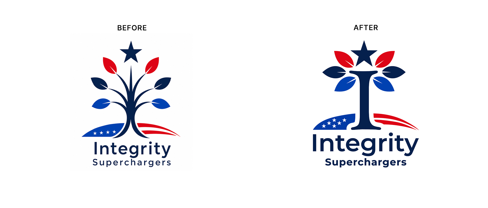
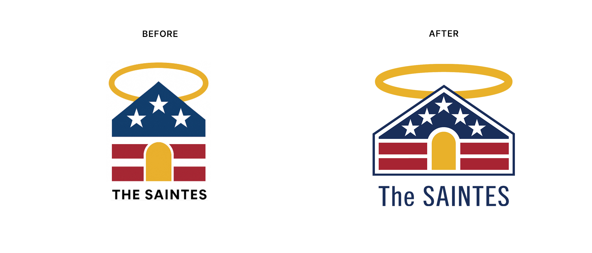
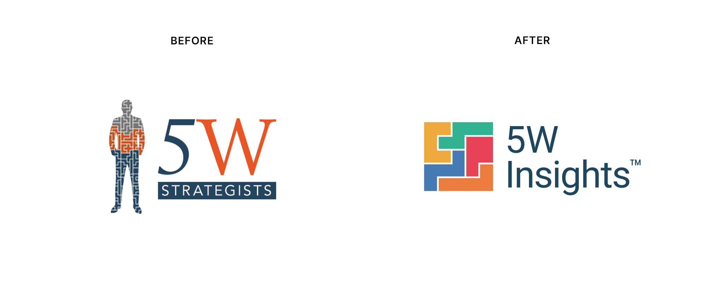

Strategic Design Transformations
Every transformation on this page started as a real-world business hurdle. This gallery is a peek behind the curtain at my process, showing how I take raw concepts or flawed assets, find their potential, and craft them into highly intentional, production-ready assets for the real world.
-
Integrity Superchargers
2026About: Nonpartisan community platform empowering Americans to strengthen their lives and communities through integrity-driven action
The Refinement: Engineered a unified, high-momentum visual anchor. Replaced the literal, fragile legacy tree with an integrated "I" monogram that stabilizes the brand and projects the baseline institutional trust required for a national civic movement.

-
The SAINTES
2025About: Nonpartisan civic movement leveraging collective voting power and fact-based education to advance economic fairness and security across America
The Refinement: Balanced a raw AI-generated layout, injecting intentional institutional storytelling and precise production geometry:
-
Architectural Blueprint:
Re-proportioned the logo to project absolute strength and stability through a wider baseline. The structural framework explicitly mirrors the historic facade proportions of the White House at the base, topped by the precise aerodynamic angles of the B-2 Spirit stealth bomber.
-
Hidden Symbolism:
Aligned the gold entrance and upper triangle to form a hidden, upward-pointing arrow for progress, anchored by a pair of red eqaul sign representing balance and equality.
-
Manufacturing Optimization:
Engineered the perimeter silhouette to scale flawlessly for a stamped lapel pin execution for lawmakers, refining the halo to add dimensional depth without breaking vector constraints.
-
Typography:
Replaced the generic, crowded lettering with a commanding, high-legibility sans-serif typeface.

-
-
5W Insights
2022About: Fractional marketing analytics and consulting agency delivering AI tools, custom data models, and strategic roadmaps to optimize audience engagement and revenue
The Refinement: Dropped the overly complex literal human figure that fractured at small sizes. Built a crisp, modular geometric monogram that actively conveys data integration and multi-channel connectivity, signaling a modern, tech-forward authority.
